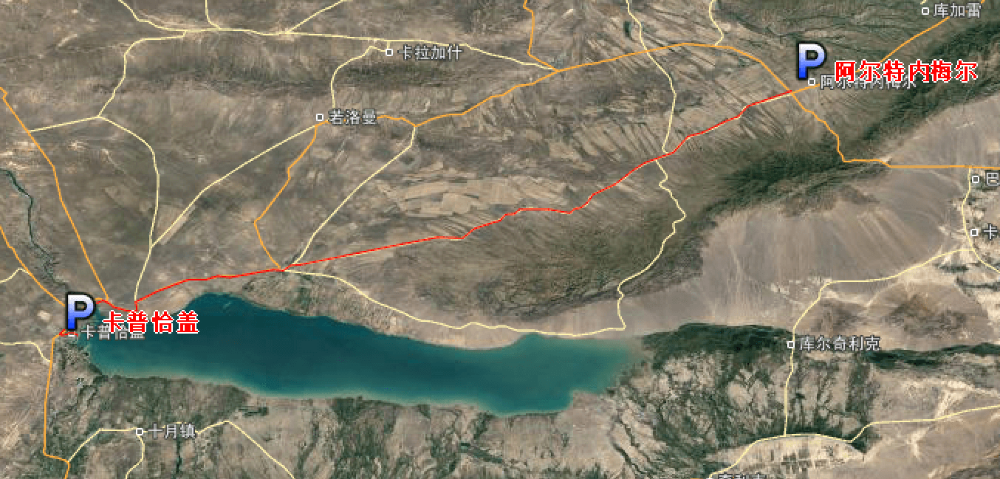
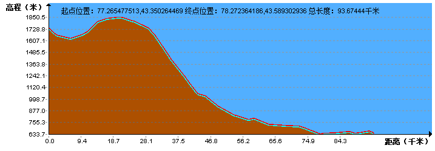

| | | | | |
| - | - | - | - | - |
|<b>中文名称</b>|哈萨克斯坦共和国||<b>人口密度</b>|6.6人/平方公里（2016年）|
|<b>英文名称</b>|The Republic of Kazakhstan||<b>主要民族</b>|哈萨克人、俄罗斯人|
|<b>简称</b>|哈萨克斯坦、哈萨克||<b>主要宗教</b>|伊斯兰教、东正教|
|<b>所属洲</b>|亚洲||<b>国土面积</b>|2724900平方公里|
|<b>首都</b>|阿斯塔纳||<b>水域率</b>|1.7%|
|<b>主要城市</b>|阿拉木图、卡拉干达、乌拉尔等||<b>GDP总计</b>|1594.07亿美元（2017年，国际汇率）|
|<b>国庆日</b>|1991年12月16日||<b>人均GDP</b>|8838美元（2017年，国际汇率）|
|<b>国歌</b>|《我的哈萨克》||<b>国际电话区号</b>|+7|
|<b>国家代码</b>|KAZ||<b>国际域名缩写</b>|kz|
|<b>官方语言</b>|哈萨克语、俄语||<b>道路通行</b>|靠右驾驶|
|<b>货币</b>|哈萨克斯坦坚戈||<b>人类发展指数</b>|0.757（2014年）|
|<b>时区</b>|UTC+3至UTC+6||<b>国家象征</b>|雪豹、金雕|
|<b>政治体制</b>|总统制共和制||<b>法律体系</b>|欧陆法系|
|<b>国家领袖</b>|总统：纳扎尔巴耶夫，总理：马西莫夫||<b>国家结构形式</b>|单一制|
|<b>人口数量</b>|1779.7万（2016年）||<b>历法</b>|公历|
## <i class="fa fa-file-text-o"></i>&nbsp;目录（Table of Contents）
+ [I. 总路线图](#one)
+ [II. 景点](#two)
+ [III. 路线规划](#three)
- [1、清水河镇 - 科内罗连](#1)
- [2、科内罗连 - 阿尔特内梅尔](#2)
- [3、阿尔特内梅尔 - 卡普恰盖](#3)
- [4、卡普恰盖 - 塔尔加尔](#4)
- [5、塔尔加尔 - 奇利克](#5)
- [6、奇利克 - 恰伦](#6)
- [7、恰伦 - 清水河镇](#7)
<h2 id="one"><i class="fa fa-circle-o-notch fa-spin"></i>&nbsp;总路线图</h2>
<h2 id="two"><i class="fa fa-star-o"></i>&nbsp;景点（暂无）</h2>
<h2 id="three"><i class="fa fa-spinner fa-pulse"></i>&nbsp;路线规划</h2>
<h4 id="1">1、清水河镇 - 科内罗连&nbsp;&nbsp;<i class="fa fa-bicycle fa-2x"></i></h4>
<h4 id="2">2、科内罗连 - 阿尔特内梅尔&nbsp;&nbsp;<i class="fa fa-bicycle fa-2x"></i></h4>
<h4 id="3">3、阿尔特内梅尔 - 卡普恰盖&nbsp;&nbsp;<i class="fa fa-bicycle fa-2x"></i></h4>

<h4 id="4">4、卡普恰盖 - 塔尔加尔&nbsp;&nbsp;<i class="fa fa-bicycle fa-2x"></i></h4>
<h4 id="5">5、塔尔加尔 - 奇利克&nbsp;&nbsp;<i class="fa fa-bicycle fa-2x"></i></h4>

<h4 id="6">6、奇利克 - 恰伦&nbsp;&nbsp;<i class="fa fa-bicycle fa-2x"></i></h4>
<h4 id="7">7、恰伦 - 清水河镇&nbsp;&nbsp;<i class="fa fa-bicycle fa-2x"></i></h4>